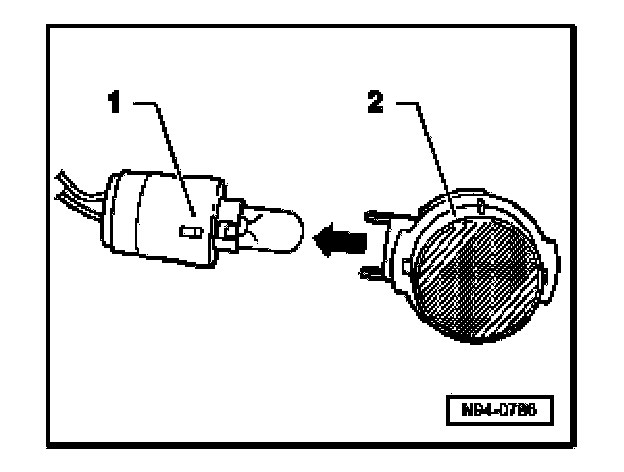
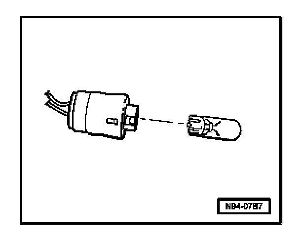

Entry Light In Exterior Mirror, Removing and Installing
Entry Light In Exterior Mirror, Removing And Installing
Removing
- Switch off all electrical consumers, switch off ignition and remove ignition key.
- Remove mirror glass

- Pull holder with bulb -1- out from housing -2-.

- Pull bulb -1- out from holder -2-.
Bulb 12 V, W 5 W
Installing
Install in reverse order of removal.